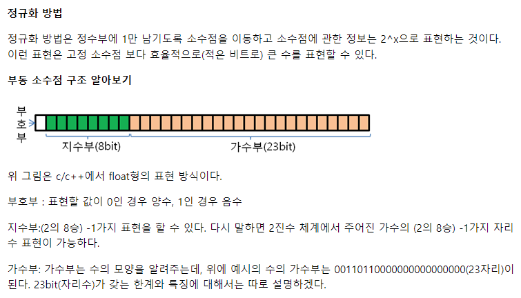
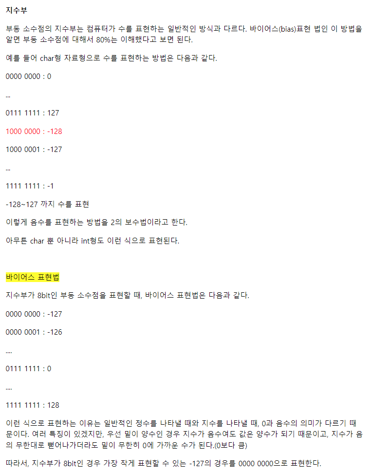
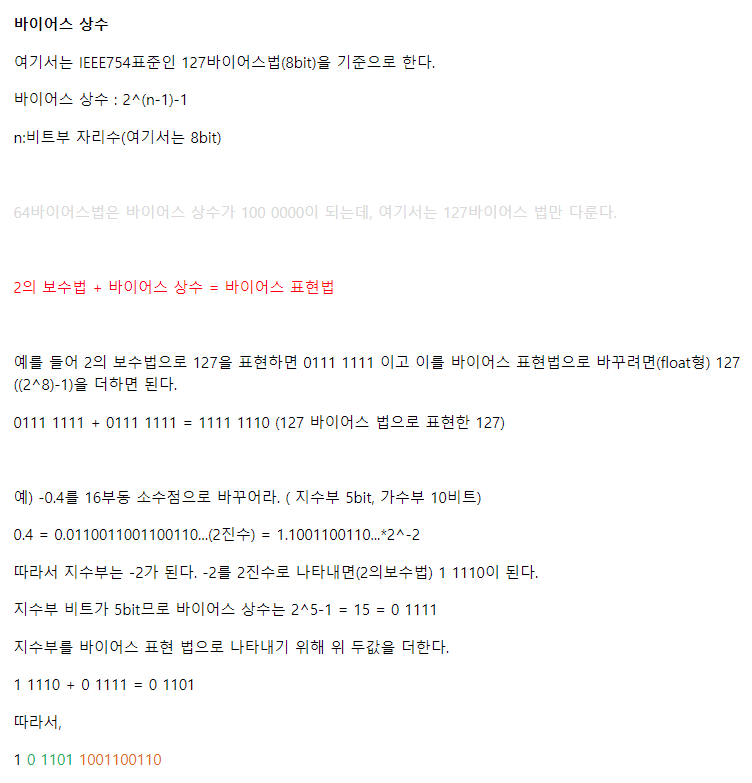
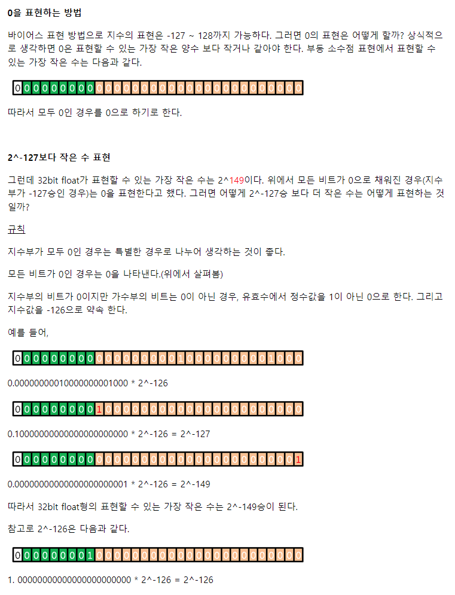

부동 소수점은 표현상 효율적이지만, 정확하진 않다.
부동 소수점
부동 소수점에 대해 잘 정리된 포스팅이 있다.
부동 소수점 (SQL server 에서는 float, real) 은 표현상 효율적이긴 하나, 정확하진 않다.
SQL server 에서는 decimal, numeric, money, smallmoney 가 정확함.
본 포스트에 기재된 모든 내용은 아래 출처에서 복사해온 내용이며 스터디 목적으로 다시금 곱씹어보았다.
출처: http://thrillfighter.tistory.com/349↗
부동 소수점에 대한 이해
부동 소수점 표현은 아주 큰 수와 아주 작은 수를 효율적으로 표현하기 위해서 사용한다. 여기서 효율적이란 표현은 정확하다는 표현은 아니고 효율적일 수록 오차가 발생하기 마련이다. 우선 부동소수점 표현을 어떤 방식으로 하는지 이해하고, 오차가 발생할 수 밖에 없는 원리도 이해해보자.
우선 우리가 10진수를 10으로 나누거나 곱하면 소수점의 위치를 변경할 수 있다. 이와 마찬가지로 2진수 또한 2로 나누거나 곱하면 소수점 위치가 한 칸씩 이동된다. (자세한 설명은 하지 않겠지만, 이 원리를 이용해 진수변환도 한다는 것을 알아 두자.) 부동 소수점은 이런 원리를 이용해서 소수점의 위치를 나타낸다.
예를 들어 1001.1011 이란 수가 있다면, 부동 소수점은 이 수를 1.0011011 * 2^ 으로 표현 한다.
여기서 3은 위에서 설명한 원리를 통해 소수점의 위치를 정하게 되고 앞에 1.0011011은 1001.1011을 정규화한 것이다.
정규화 방법

지수부

바이어스 상수


부동 소수점의 오차
부동 소수점은 적은 비트로 큰 수를 표현할 수 있지만, 이런 효율성은 정확성을 떨어뜨릴 수 밖에 없다. float의 가수부의 크기는 23bit인데, 23은 실제로 값자리수(길이)를 나타낸다. 부동 소수점의 표현 방식상 정수값 자리수가 23을 넘어가게 되면 소수점 이동이 23(가수의 길이)이 넘어가므로 가수부의 길이를 초과하여 소수점 이하를 표현할 길이 없어진다. 길이를 넘어가게 되면 가수의 마지막 자리 값은 넘어간 수만큼의 0이 생긴다.
지수값이 24인 경우 0이 하나 생겼다. 2진수의 LSD(least significant Digit)가 무조건 0이기 때문에 홀수를 표현할 수 없다.
지수값이 25가 되면 0이 두개 생긴다. 따라서 4의 배수만 표현된다. 이런 식으로 오차가 점점 늘어나는데, 사실 이런 오차는 지수값이 23이넘어가면 값의 크기에 비해서 아주 작은 값이 되므로 그렇게 큰 차이는 아니지만, 정밀도가 떨어질 수밖에 없다. 따라서 double 타입의 자료형을 사용하면 이런 오차를 좀 더 줄일 수 있다.
아래는 부동 소수점에 대한 위키백과 내용 입니다.
https://ko.wikipedia.org/wiki/부동소수점↗